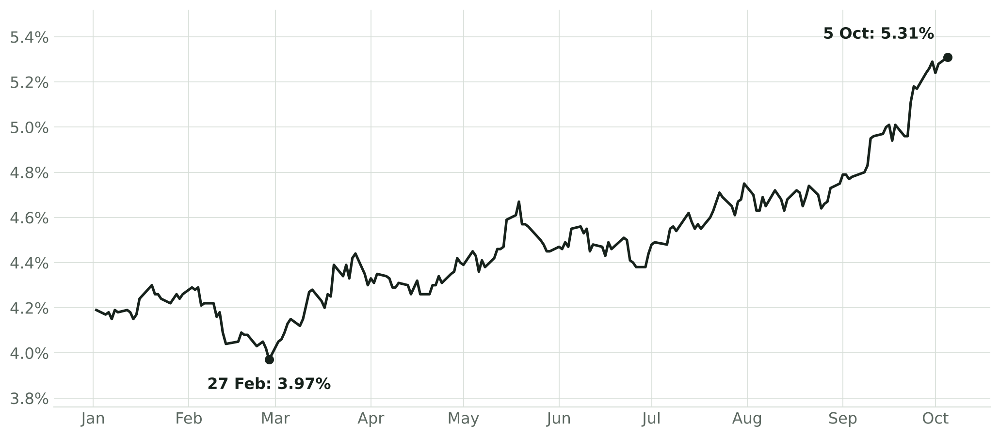
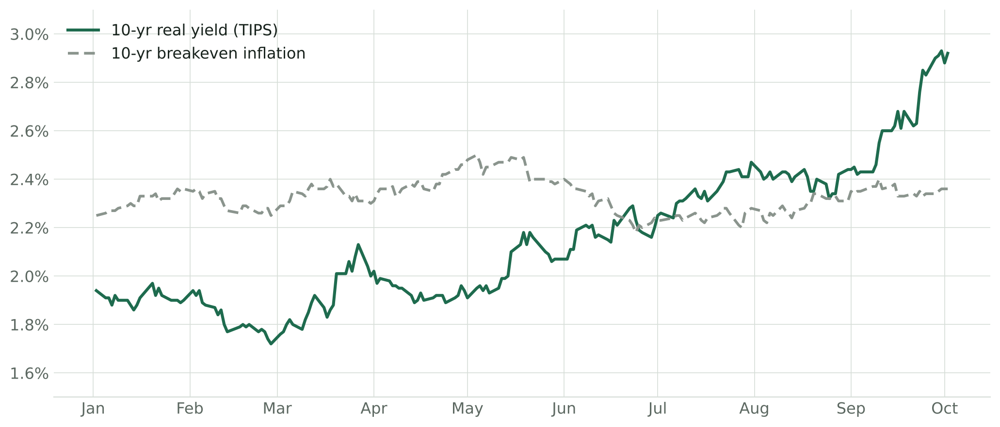
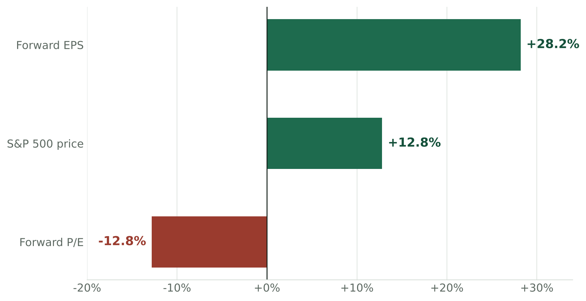
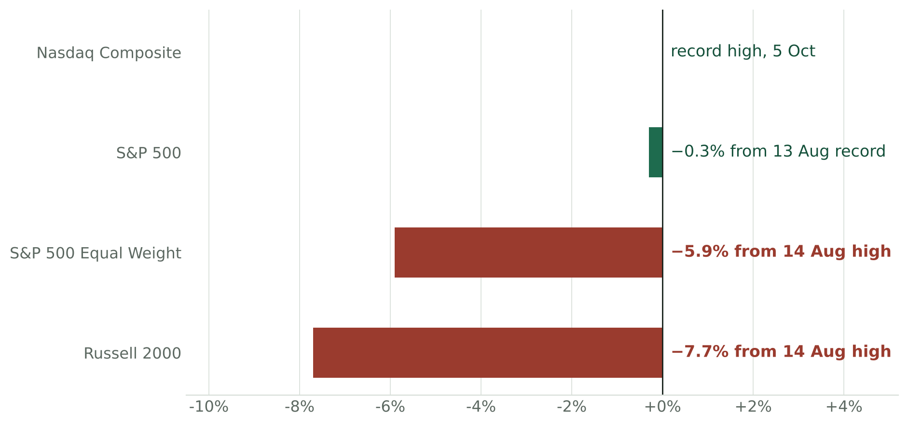
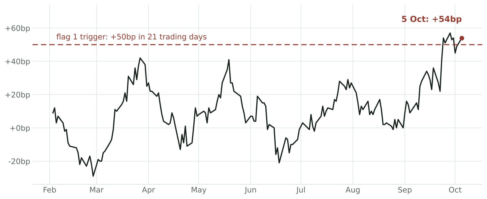
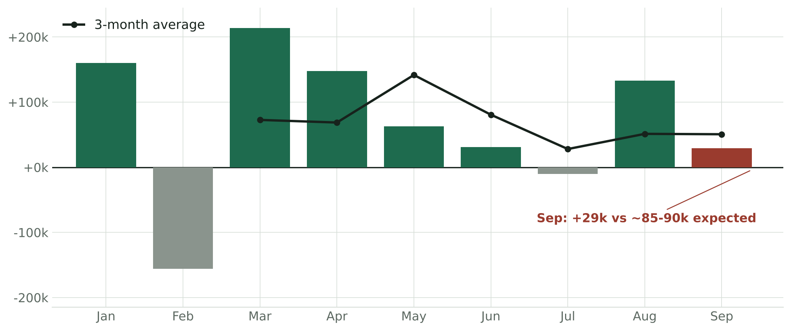
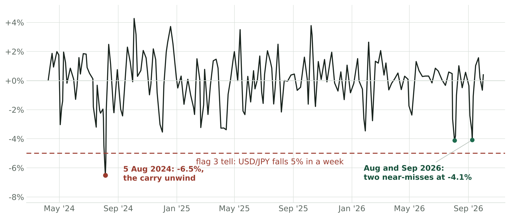
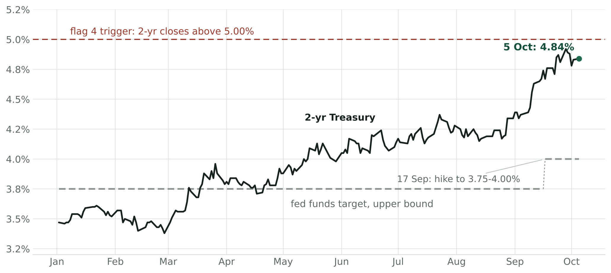
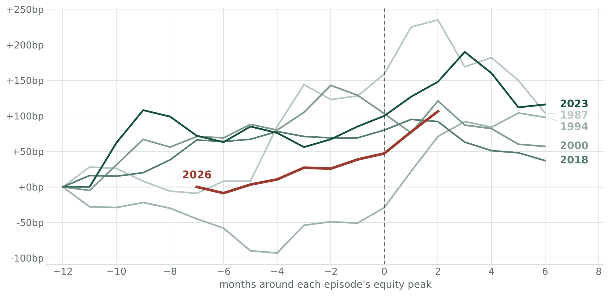
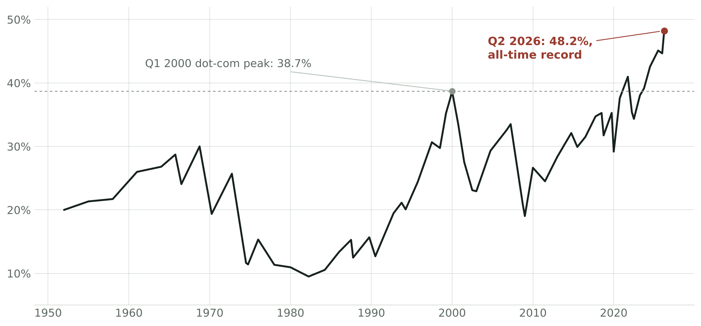

Macro · Rates and equities
Rising Yields, Record Equities: The 2026 Divergence
On 5 October the 10-year Treasury yield touched 5.349% intraday, its highest since April 2002, and the Nasdaq closed at a record on the same session. Stocks ignoring rising bond yields is not new: it happened in 1987, 1994, 2000, 2018 and 2023, and each time the ignoring stopped. The way in which this 'stop' occurred has varied: two ended in corrections (2018, 2023), one went sideways (1994), one crashed (1987), and one deflated over a period of two and a half years (2000).
This piece will do three things. The first is to name the specific flags that were observable before each of these past divergences broke, with thresholds to watch over the coming months. The next is to show how each of the prior episodes resolved. Most important is to cover where each flag stands today, what the market anticipates over the medium term, and how that is similar to or different from the previous episodes.
| Flag | Fires when | Status (5 Oct) |
|---|---|---|
| 1 · Speed of the yield move | The 10-yr rises 50bp in 21 trading days, or 30 in 10 | FIRED - late September; +54bp and holding |
| 2 · Decoupling from growth data | Yields close higher on a clear downside growth surprise; confirmed if it repeats | FIRED, UNCONFIRMED - 2 October; confirmed if it repeats |
| 3 · Something levered breaks | Forced deleveraging anywhere: a gated fund selling, VIX above 40, a 3bp auction tail on weak indirects, USD/JPY down 5% in a week | NOT FIRED - yen tell at −4.1% twice since August |
| 4 · Policy shock | The 2-yr closes above 5.00%, or a further hike is delivered | NOT FIRED - 2-yr at 4.84%, 16bp from the line |
The Move in Yields
The 10-year reached a new 24-year high of 5.35% this week, up 112 basis points this year – and continuing to steepen (chart).

10-yr Treasury constant maturity yield, daily, 2026.
Nearly all of this move is real. 98 of the 112 basis points came from TIPS yields, breakevens have gone nowhere, and the Kim-Wright term premium has nearly doubled this year to 1.08% (chart). This strongly signals that supply and term premium are being repriced rather than strong growth expectations or inflation.

10-yr TIPS real yield and 10-yr breakeven inflation, daily, 2026.
The De-Rating Beneath the Index
At the same time, the S&P 500, which sits within half a percent of its record, is hiding a meaningful de-rating beneath the index level. The forward multiple has compressed from roughly 22x to 19.0x this year as forward earnings have risen 28.2% against a 12.8% rise in price (chart). Clearly, record earnings growth is currently absorbing the valuation pressure that rising yields would otherwise be forcing through prices. I believe that if the earnings line slows (whether as a result of Q3 misses or margins giving back their record) there is nothing else holding the index up.

S&P 500 forward EPS, price and forward P/E, change year to date.
For most of the market, the pressure from rising yields is emerging in prices. The equal-weight index has fallen for seven straight weeks and only a quarter of S&P stocks still trade above their 50-day average, yet the headline sits within 0.3% of its record because a shrinking group of large names is holding it there (chart). That is how 1987 and 2000 began, albeit this version is younger and milder than either.

Distance from record high, 5 October 2026.
The Four Flags
There are four main flags that were evident ahead of the previous episodes and can be tracked in real time. I have set out what counts as each one firing, so that the definitions are fixed rather than fitted after the fact. A fired flag has historically been a warning rather than a verdict: the speed flag fired in 1994 ahead of a 9% dip and nothing more, and it has produced two near-misses this spring that resolved quietly.
Flag 1 · Speed of the Yield Move
Fires when: the 10-year rises more than 50 basis points in 21 trading days, or more than 30 in 10 (Goldman's ~2-sigma definition on rolling 1-year vol).
The pace of a yield move has mattered more than its level in every episode since 1987, and it is the flag that fired closest to the break in both 2018 and 2023. It fired here in late September. Interestingly, two earlier runs at the line faded in the spring – this crossing is the first to hold, and the reading stands at plus 54 basis points as of Monday (chart).

Rolling 21-trading-day change in the 10-yr yield, 2026.
Flag 2 · Decoupling from Growth Data
Fires when: yields close higher on a clear downside surprise in a major growth print (a payrolls miss of 40k or more against consensus, or an ISM miss of 2 or more points), or the term premium rises while policy-rate expectations fall; confirmed if it repeats on the next such print.
Yields rising through weak data is how October 2023 announced itself, with the long end climbing on refunding fears ahead of a 10.3% correction. This time round, the fire came through the labor market, where payrolls have decelerated from a 142k three-month pace in the spring to 51k now, and the September print of 29k against roughly 85–90k expected came with net negative revisions (chart). The 10-year closed higher that day, and Monday extended the signal with yields at a 24-year high while October hold odds reached 82%. The next soft print is the confirmation test.

Monthly change in nonfarm payrolls, 2026, with 3-month average.
Flag 3 · Something Levered Breaks
Fires when: forced deleveraging appears anywhere in the system. The vehicle has been different every time, so the observable tells are examples rather than a complete list: a gated fund followed by confirmed asset sales, a VIX close above 40, a coupon auction tailing more than 3 basis points with indirects below 65%, or USD/JPY falling more than 5% in a week.
Portfolio insurance in 1987, LTCM in 1998 and the yen carry unwind of August 2024 are the precedents, and in each the gap between contained stress and forced selling closed in days. The vehicle is unknowable in advance, but I believe there are two live candidates. Usefully, they vary in speed. Private credit is the slow one, with some early signs already: Blackstone's BCRED and Cliffwater's $31B fund both capped third-quarter redemptions at 5% against far larger requests, and Fitch's default rate for the asset class is at a record 6.3%. The assets reprice quarterly though, and nothing has been forced to sell: MOVE sits at 107 against 142 at the October 2023 stress peak.
The yen carry is the fast one. It has the freshest precedent, and both of its 2024 ingredients (pressure on the Bank of Japan and softening US labor data) are present again. The weekly tell has twitched twice this year, reaching −4.1% in early August and again in early September without crossing the line (chart).

Rolling 5-day change in USD/JPY, April 2024 to October 2026.
Flag 4 · Policy Shock
Fires when: the 2-year closes above 5.00%, or a further hike is delivered. Only hikes from here count: September's is excluded.
Powell's "long way from neutral" remark in October 2018 is the precedent for how quickly communication alone can end the ignoring. The 2-year has repriced in one direction all year, from 3.47% to 4.84%, and sits within 16 basis points of the trigger even after September's hike lifted the ceiling to 4.00% (chart). The 28 October FOMC is the scheduled test, with a December hike still priced at roughly 65–78% after the payrolls miss.

2-yr Treasury yield vs the fed funds target upper bound, 2026.
The Five Precedents
1987: The 10-year went from 7% in January to above 10% by mid-October while the S&P rose 40% into its 25 August peak. Flags 1 and 3 fired, with portfolio insurance as the levered break. The final result was the crash, where the market dropped 33.5% in 101 days (25 August to 4 December), and the release was the Fed's liquidity statement the morning after Black Monday.
1994: The Fed's hike of 300 basis points into genuine strength caused yields to rise from 5.2% to 8%. Stocks peaked on 2 February, two days before the first hike, and proceeded to fall 8.9% by 4 April, then ground sideways for the rest of the year while earnings caught up. This is the one benign exit in the sample, and it started from a 15x multiple.
1998 to 2000: The Nasdaq ignored bond markets for 17 months (behind a narrow set of mega-cap leaders during the dotcom bubble) as yields rose from 4.2% to roughly 6.8% by January 2000. No releaser ever arrived: the Fed's 2001 cuts did not help because rates were never the problem, the growth assumptions were. The S&P lost 49.1% over 929 days and the Nasdaq lost 77.9%.
2018: Yields rose from 2.4% in January to an intraday break of 3.25% in early October, and this time the shock came from the Fed itself, with Powell remarking on 3 October that rates were "a long way from neutral." The S&P fell 19.8% in 95 days to its Christmas Eve low, but the recovery was sealed by a single sentence on 4 January, when Powell told the AEA that "we will be patient as we watch to see how the economy evolves."
2023: This is the closest mechanical match to today: a term premium move off the August refunding and the Fitch downgrade, yields through 5% intraday in October, and a 10.3% correction from 31 July to 27 October taken entirely out of the multiple while earnings held. The release arrived as a pair: a smaller-than-feared refunding and an FOMC hold in the same week, and the 10-year fell about 110 basis points in ten weeks.
Charting all five periods against today, the pattern lines up: every prior episode saw yields keep rising past the equity peak until something gave, and the 2026 line is two months past the 13 August record and accelerating (chart).

Change in the 10-yr yield, monthly average, from 12 months before to 6 months after each episode's equity peak; 2026 aligned on the 13 August record.
One detail separates the benign resolutions from what occurred in 2000. Every bottom was put in by a releaser (Fed liquidity in 1987, the Fed stopping in 1994, the AEA speech in 2019, the Treasury and Fed together in 2023), and 2000 is the episode where none arrived. I believe there are some early candidates which could serve as the releaser going forward. These include the quarterly refunding announcement in early November (the exact 2023 valve), Treasury's enlarged buybacks of long-dated debt, the 28 October FOMC, and Q3 earnings season (opens 13 October), which is the only valve that does not require a policymaker.
How 2026 Compares
In the current climate, there are numerous characteristics which match the precedents. The mechanism here matches 2023 – a real-yield, term premium move with breakevens flat, now rising even through weak economic data, accelerating right after a round-number break at 5%, the same level where 2023's acceleration started. Breadth cracked months before the headline index, as it did in the uglier precedents.
Crucially, positioning this time is stretched far beyond any of them. Household equity allocation at 48.2% of financial assets is an all-time record, nearly ten points above the dot-com peak (chart). Margin debt is a record 4.5% of GDP, though against market cap (~2%) it is unremarkable next to 2000 or 2007; I read it as confirming the allocation picture, not adding to it. The cushion is thin too: a 19.0x forward P/E against a 5.3% risk-free rate puts the forward earnings yield roughly equal to the 10-year. Among the episodes with forward estimates, only 2000 offered less compensation for owning stocks over bonds, and 1987, on trailing earnings against a 10% Treasury, was worse than either.

Corporate equities as a share of US household financial assets, 1952–2026.
There are also characteristics this time that no precedent had. Earnings growth is much stronger: forward EPS is up 28.2% at a record $406 and consensus has Q3 growth near 29%; in 1994, the benign exit, earnings grew roughly half that fast, and every bearish reading above depends on this line rolling over.
The multiple has also already compressed to below its 10-year average, where 2000 started its break at 24–25x. Breadth is not the 1999 fingerprint: equal-weight led the index for most of 2026 and the Magnificent 7 lagged the S&P by 7.6 points as late as mid July; the narrowing is seven weeks old, where 1999's ran for over a year.
The flags also fire in years that produce nothing, and that base rate is the reason none of them is read here as a verdict. The speed flag crossed in July 2013, when the taper announcement drove the 10-year up 65 basis points in 21 trading days, and the S&P fell 5.8% before resuming a year it finished up 30%; gated funds have appeared in 2015, 2016 and 2019 without systemic consequence. What separated the five precedents from these false alarms is that several flags fired together against stretched positioning rather than one firing alone, which is why the count and the combination matter more than any single line being crossed.
Going Forward
The $39B 10-year reopening prices on 7 October at 1pm ET, asking buyers for a roughly 50 basis point concession to September's auction (4.834%, a 2.71 bid-to-cover, 79% indirects), with the 30-year following on the 8th; a tail with weak indirects would be a flag 3 reading. Q3 earnings season opens on 13 October and is the only release valve that does not require a policymaker, CPI follows on the 14th with ISM services prices-paid already at its highest since 2022, and the 28 October FOMC is flag 4's scheduled test. The quarterly refunding announcement in early November is the 2023-style valve.
Sources
- FRED (Board of Governors / US Treasury): DGS10, DGS2, DFII10, T10YIE, GS10, DFEDTARU, PAYEMS, DEXJPUS (H.10), THREEFYTP10 (Kim-Wright), BOGZ1FL153064486Q (Z.1 household equities), pulled 6 Oct 2026.
- BLS, The Employment Situation, September 2026 (released 2 Oct 2026).
- US Treasury / TreasuryDirect auction results; October auction schedule via Newsquawk.
- CNBC: Treasury yields 5 Oct 2026; jobs report 2 Oct 2026; CME FedWatch pricing.
- Yardeni Research: QuickTakes (5 Oct 2026); bull/bear market tables; Private Credit Monitor; forward P/E and earnings series.
- FactSet Earnings Insight (2 Oct 2026).
- Goldman Sachs Global Strategy Views, 17 Sep 2026 (the 2-sigma yield-speed framework).
- Brady Commission Report (1988); BIS Bulletin 90 (Aug 2024) on the yen carry unwind.